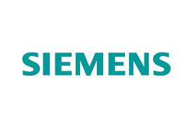

Why Choose Us in Kharkiv
- Experienced technicians
- Arrival within 1–3 hours
- Free consultation
- Transparent pricing
- Up to 12 months warranty
We Repair All Brands

and others
Request for Washing Machine Repair in Kharkiv and Surroundings
Customer Reviews
Leave a review
5 Tips from Our Technicians
- Regularly clean the pump filter.
- Do not overload with laundry.
- Use quality detergents.
- Drain water after washing.
- Clean the drum with citric acid every 6 months.
Frequently Asked Questions and Common Faults in Washing Machines in Kharkiv
- Do you accept orders from suburban areas?
- Yes, we serve not only Kharkiv but also nearby towns and villages. Our technician can come to Kharkiv and the surrounding areas.
- How long to wait for a technician?
- Usually the technician arrives within a few hours after placing the order, depending on the district and workload. We work every day, without days off.
- What is the repair warranty?
- We provide an official warranty from 3 to 12 months for the work performed and installed parts. If the problem recurs during the warranty period, we will fix it free of charge.
- How much does washing machine diagnostics cost?
- Diagnostics are completely free when ordering a repair. If you refuse the repair, you only pay for the visit and equipment inspection.
- What are the most common faults?
- The most common issues include:
- Machine does not turn on or shuts down by itself.
- Does not heat water or overheats it.
- Does not drain water, shows errors F01–F08.
- Loud noise or vibration during spin.
- Water leakage from the door or hoses.
- Control board malfunction.